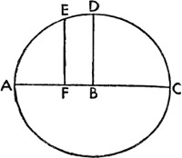
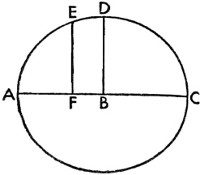

7. Ekinoksların Görünen ve Düzenli Devinmesi Arasındaki En Büyük Fark Üzerine

Böylece ortalama hareketler bu yolla açıklandıktan sonra artık ekinoksların görünen ve düzenli hareketi arasındaki en büyük farkın veya kendisi boyunca ayrıklık hareketinin geçtiği küçük dairenin çapının ne olduğu araştırılmalı. Zira bu bilindiğinde, hareketlerdeki diğer farklılıkları ayırt etmek de kolay olacaktır. Yukarıda da yazıldığı gibi, Timochares'in ilk gözlemiyle Antoninus Pius'un yönetiminin ikinci yılında gerçekleşen Ptolemaeus'un gözlemi arasında 432 yıl vardı ve bu süre boyunca ortalama hareket 6º; görünen hareket ise 4º20' kadardı.
O halde onlar arasındaki fark 1º40', çifte ayrıklık hareketi ise 90º35'ydı. Bu sürenin ortasında ya da civarında görünür hareketin en yavaş noktasına ulaştığı görülür. Bu anda görünür hareketin konumu kaçınılmaz olarak ortalama harekete uyar ve hakiki ekinoks ile ortalama ekinoks, dairelerin aynı kesitinde gerçekleşir. Bu nedenle hareketi ve zamanı iki eşit parçaya ayırırsak, her bir parçada, düzenli ve düzensiz hareket arasında farklılık olarak ayrıklık dairesinin her bir kenarda 45º17'30''lik yayın altında kapsadığı 10/12º bulunacaktır. Fakat tüm bu farklar çok küçük olduğundan ekliptikte 1,5ºye varamaz ve düz çizgiler hemen hemen ayırdıkları yaylara eşittir. Bu yüzden fark ancak saniyenin altında görülebilir ve bizim gibi dakikalar dahilinde kalanlar için yaylar yerine düz çizgileri koymak herhangi bir fark yaratmaz. Bu yapıdan hareketle ABC, ekliptiğin yayı; DBE ortalama ekvatoral yay ve B görünen ekinoksların ortalama kesiti, yani Koç veya Terazi olsun; BF, DBE'nin kutupları boyunca insin. Bu durumda ABC yayı boyunca her iki kenarda BI yayı, BK yayına, o da 1º10'ya eşit olsun; buradan hareketle IBK yayı da 1º40'ya eşit olur. Dahası FB'ye dik olarak, görünen ekvatorların IG ve HK yayları çizilsin. Buna "dik olarak" diyorum ancak IG ile HK'nin kutupları genellikle BF dairesinin dışında yer alır; zira hipotezlerde de görüldüğü gibi, eğikliğin hareketi buna dahil olduğundan aradaki mesafe çok belirsizdir –en büyük noktada 450'yı aşmaz– ve duyulara dayalı algımıza göre bu açılar dik olur. Böylelikle ortaya büyük bir hata çıkmamış olacak. Buna göre IBG üçgeninde, IBG açısı 66º20'ya eşittir; çünkü tümleyeni, ekliptiğin ortalama eğiklik açısı olan DBA, 23º40'dır. BGI açısı 90ºye; buna ek olarak BIG açısı da yaklaşık olarak IBD açısına eşittir. Ve IB kenarı 50'ya eşit olur. Buna göre BG yayı da 20'dır ve bu, görünen ekvator ile ortalama ekvatorun kutupları arasındaki mesafeye eşittir.

Benzer şekilde BHK üçgeninde, BHK açısı, HBK açısına; IBG açısı, IGB açısına; BK kenarı, BI kenarına; BH, BG'ye; o da 20'ya eşittir. Fakat tüm bu farklar çok küçük olduğundan ekliptikte 1º30'ye varamaz ve düz çizgiler hemen hemen ayırdıkları yaylara eşittir. Bu yüzden fark ancak saniyenin altında görülebilir ve bizim gibi dakikalar dahilinde kalanlar için yaylar yerine düz çizgileri koymak herhangi bir fark yaratmaz. ABC, ekliptiğin bir parçası olsun ve ortalama ekinoks da üzerindeki B olsun. B kutup olmak üzere ADC yarım dairesi çizilsin; bu yarım daire, A ve C noktalarında ekliptiği kessin. Dahası ekliptiğin kutbundan DB çizilsin; bu, yarım daireyi D'de ikiye bölecektir. D aynı zamanda en büyük yavaşlığın bitimiyle artışın başlangıcı olarak anlaşılsın. AD çeyreğinde DE yayı, 45º17'30''ye eşit olsun; EF, ekliptiğin kutbundan E noktası boyunca insin; BF, 50'ya eşit olsun. Bu durumda problemimiz burada bütün BFA'nın ne olduğunu bulmaktır. Buna uygun olarak BF'nin iki katının DE'nin iki katını ayıran kirişe eşit olduğu açıktır. Fakat BF'nin AFB'ye oranı, 7107'nin 10.000'e oranına, o da 50'nın 70'ya oranına eşittir. O halde AB, 1º10'ya eşit olup; bu, aradığımız ekinoksların ortalama ve görünür hareketi arasındaki en büyük farktır ve bunu 28'lık en büyük kutup sapması takip eder.